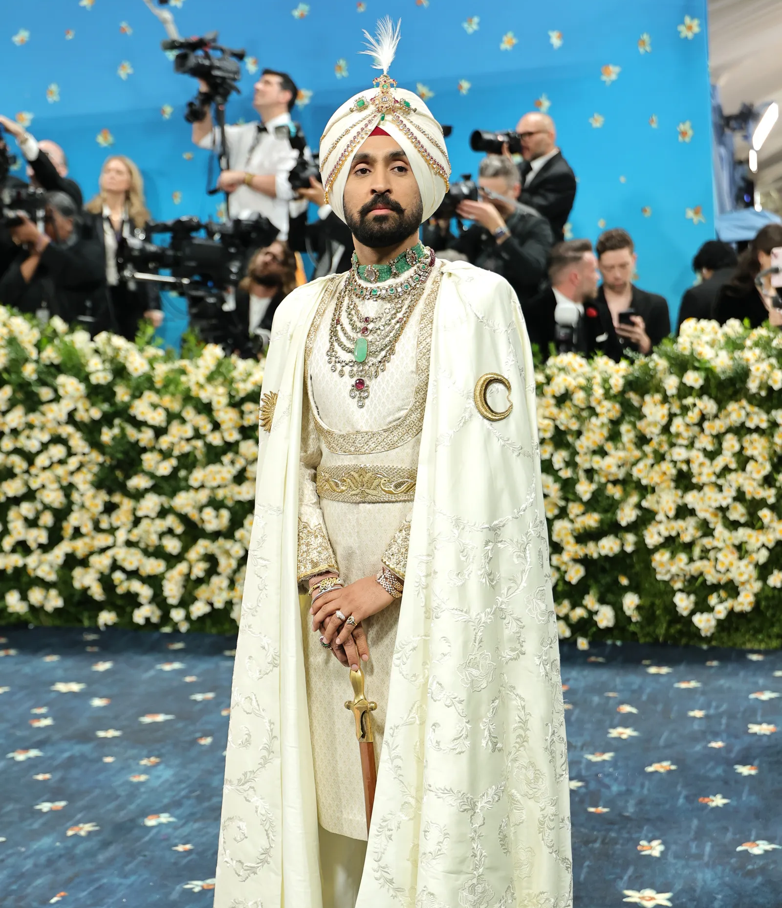
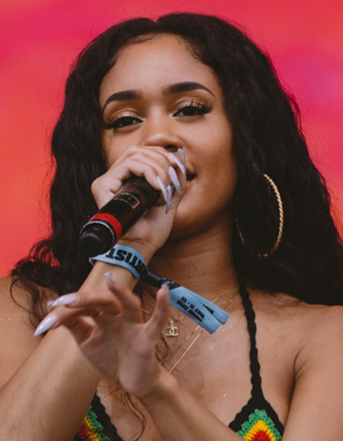
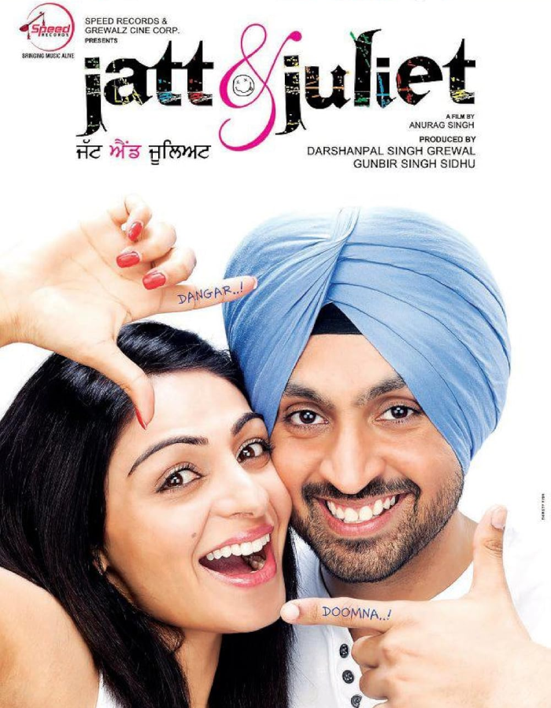
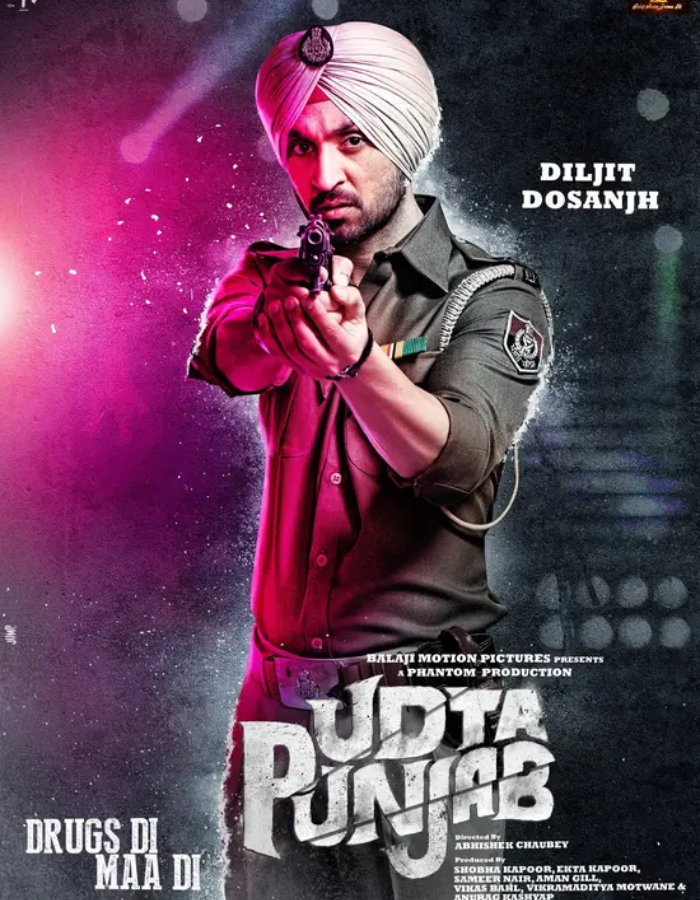
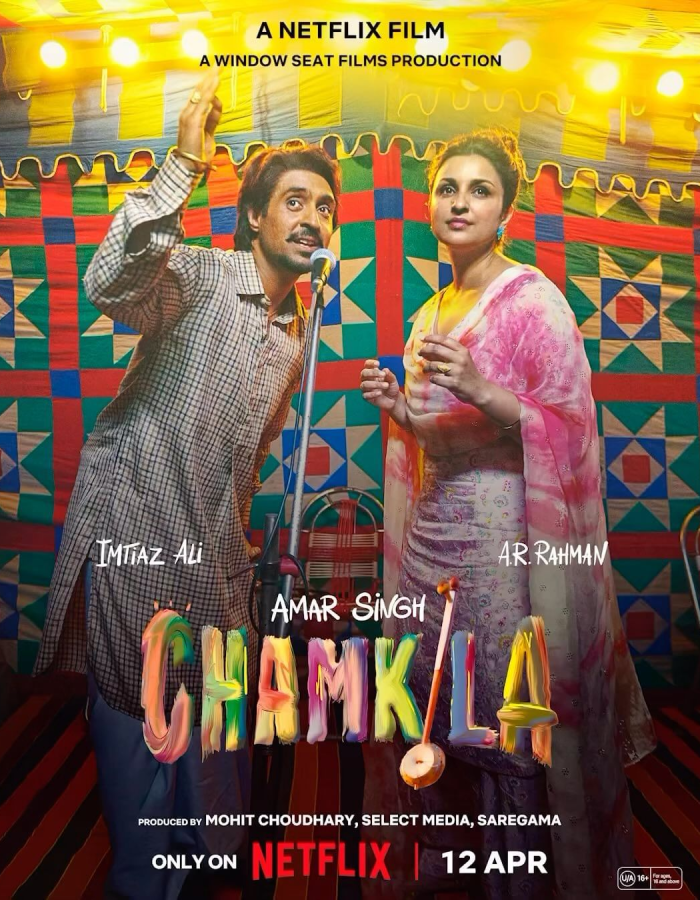
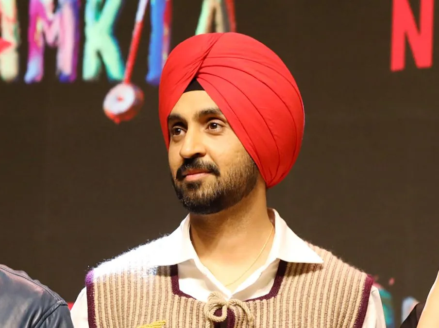

Welcome to the World of Diljit Dosanjh
Singer • Actor • Global Icon

Born in Punjab, Diljit Dosanjh revolutionised Punjabi music by blending folk traditions with contemporary beats. From local gigs to sold-out world tours, his journey embodies resilience and artistry.
With songs like 'Water' and 'Born to Shine', Diljit's music transcends borders, while collaborations with global stars like
Ed Sheeran,
Sia and
Saweetie 
His impact echoed at the 2025 Met Gala, where Diljit commanded attention in a regal sherwani, layered with Indian jewellery, transforming fashion's biggest night into a celebration of Punjabi heritage.
As an actor, Diljit brings charm and depth to a wide range of roles — from hilarious hits like
Jatt & Juliet  
In 2024, he won the Filmfare OTT Award for Best Actor for his gripping portrayal in
Chamkila 

Diljit’s off-screen presence is just as compelling as his performances. He regularly goes live on Instagram, creating spontaneous viral moments — like the time he demanded Alexa to play his own track. Known for his humility and grounded nature, Diljit remains relatable despite his global fame. His daily updates, humour, and direct interaction with fans have earned him a reputation as one of the most authentic celebrities online. Through his digital presence, he continues to represent Punjabi culture proudly, connecting deeply with audiences around the world.